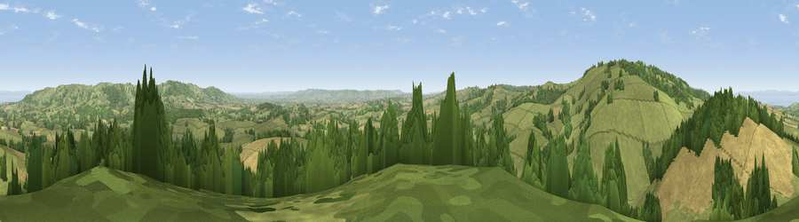

Willett Hill
#2902 in England · top 11% of its area beats it · near Brompton RalphThe view, rendered

A 360° render of this exact spot computed from the terrain model, tree cover and land cover — summer colours, afternoon light, calibrated against photographs of famous viewpoints. Real trees, hedges and buildings will differ in detail.
The panorama
Grey silhouette: terrain skyline in each direction (720 bearings, Earth curvature and refraction included). Dashed green: skyline with trees (+15 m) and buildings (+8 m) as obstacles. Blue strip: how far the ground is visible on each bearing.
Where the view opens
Wedge length = distance to the farthest visible ground on that bearing (vegetation-aware). Rings at 10, 25 and 50 km.
What fills the view
59% grassland · 20% cropland · 19% woodland ·
Angular shares of the visible panorama (visual magnitude), not map area. Landscape diversity 0.44 (0–1 Shannon).
Key numbers
More beautiful places nearby
The staircase of upgrades: each row has a higher view potential than everything closer. Driving times are estimates from straight-line distance, calibrated against real road routing — check an actual route before setting out.
| Place | Direction | Drive | Score |
|---|---|---|---|
| Viewpoint near Elworthy | W · 2 km | ~6 min | 75.6 |
| Viewpoint near Elworthy | WNW · 3 km | ~7 min | 79.2 |
| Viewpoint near Roadwater | NW · 6 km | ~13 min | 83.6 |
| Hurley Beacon | NE · 6 km | ~14 min | 84.4 |
| Viewpoint near West Bagborough | ENE · 7 km | ~14 min | 84.6 |
| Wills Neck | ENE · 7 km | ~15 min | 85.7 |
| Viewpoint near West Quantoxhead | NNE · 8 km | ~16 min | 87.8 |
| Viewpoint near West Quantoxhead | NNE · 9 km | ~17 min | 88.7 |
51.09388, -3.29263 · source: dobih hill · position refined by local search. Computed location — check access rights before visiting.